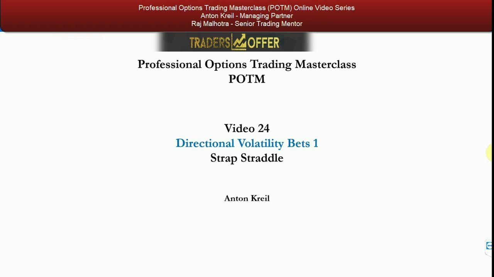
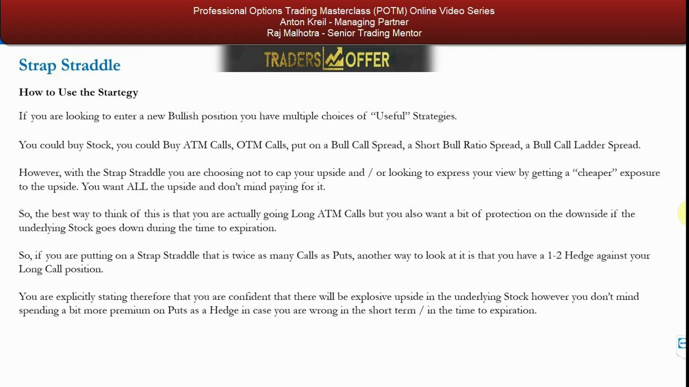
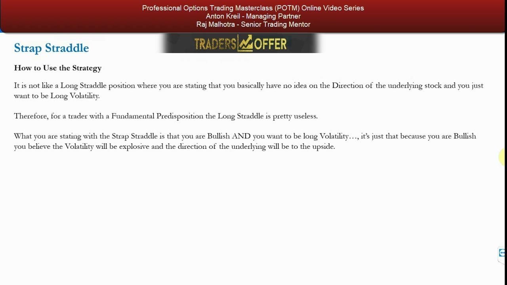
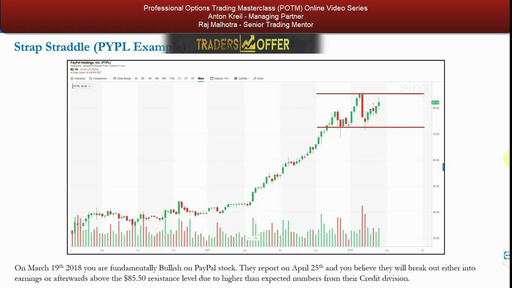
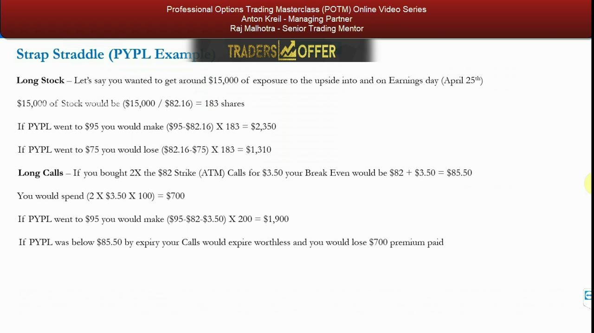
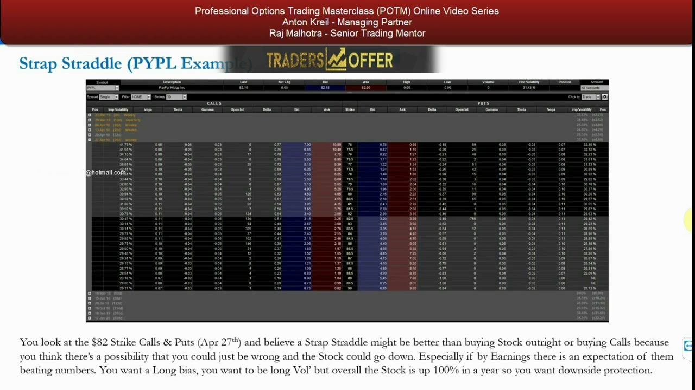

Strap Straddle — The Bullish Volatility Bet
The first directional volatility variant: a long straddle skewed bullish by buying two calls to every one put.
Take the plain long straddle — long volatility, no directional view — and make it useful to a trader with a fundamental bias. Buy two ATM calls for every one ATM put and you keep unlimited upside while paying a bit extra for downside protection in case you're wrong.
The gist
- Strap straddle = BUY 2x ATM calls + BUY 1x ATM put, same strike and same expiration — a net debit, and relatively expensive because you only buy options.
- It is the bullish-biased version of the long straddle: still long volatility both ways, but skewed to make more on an up-move (2 calls) than a down-move (1 put).
- The 2:1 ratio is the default, not a rule — any call-heavy ratio (3:1, 4:1, higher) is allowed depending on the fundamentals, option prices and implied volatility.
- The put acts as a 1-to-2 hedge against your long-call position — downside protection in case you are totally wrong in the short term.
- Max loss = total premium paid, and it occurs when the stock finishes exactly at the strike. Upside is unlimited; a big down-move still produces a large profit.
- Anton rates it HIGH in usefulness — implicit directional bias, minimal risk, unlimited upside — with no walk-back caveat (unlike the plain straddle, which he calls 'pretty useless' for a directional trader).
- Breakevens: upper = strike + total_debit/(call_contracts x 100); lower = strike - total_debit/(put_contracts x 100). Both use the TOTAL net debit over that leg's total shares.
- PYPL worked example (19 Mar 2018, stock $82.16): 2x $82 calls @ $3.50 = $700 + 1x $82 put @ $3.05 = $305 = $1,005 net debit. Upper breakeven $87.03, lower breakeven $71.95.
The first directional volatility bet
- Videos 22 and 23 covered the plain (non-directional) volatility bets; video 24 begins the directional variations.
- The strap straddle is the first of these directional volatility bets.
- It runs through the usual POTM process: quick explanation, parameters, when to use, worked example, formulas, takeaway.
This lesson opens the directional-volatility block of the course. Where a plain long straddle expresses no view, the directional variants bake in a bias — the strap straddle bakes in a bullish one.

What the strap straddle is
- BUY 2x at-the-money call options + BUY 1x at-the-money put option, both at the same strike and same expiration.
- The 2:1 ratio is only the default — it can be done 3:1, 4:1 or higher; the ratio depends on the underlying fundamentals, the option prices and the implied volatility.
- Because you hold more calls than puts, an implicit BULLISH directional bias is built into the trade.
- It is a modified long straddle: instead of 1 call + 1 put, you buy extra calls to tilt the payoff up.
- As with all long-option strategies, you are long volatility too — including if the underlying goes DOWN.
Structurally it is just a long straddle with the call side doubled up. That extra call is what converts a direction-neutral vol bet into a bullish one while still keeping you long volatility in both directions.

Parameters of the strategy
- It is both a DIRECTIONAL bet (implied bullish) and a VOLATILITY bet.
- Simple transaction — only two legs, quick and easy to deploy.
- Debit transaction: you are only buying options, so relative to other options strategies it is quite an expensive strategy.
- Maximum risk = limited to the premium paid.
- Maximum gain = unlimited, due to the call element implicit in the trade.
The trade pairs a directional read with a volatility read. You pay up front (a debit), your loss is capped at that debit, and your upside is left uncapped.
How to use it: long calls with a downside hedge
- If you are bullish you have many 'useful' choices: buy stock, buy ATM/OTM calls, a bull call spread, a short bull ratio spread, a bull call ladder spread.
- With the strap straddle you choose NOT to cap your upside and NOT to get cheaper exposure — you want ALL the upside and don't mind paying for it.
- Best framing: you are going long ATM calls, but you also want a bit of downside protection if the stock falls before expiration.
- With twice as many calls as puts, the put is a 1-to-2 hedge against your long-call position.
- You are explicitly stating you're confident of an explosive upside move, but don't mind spending extra premium on the put in case you're wrong in the short term.
Think of it as a long-call play with insurance. The put is the premium you willingly overpay so that being wrong on direction — while right on volatility — doesn't wipe you out.
Why the strap straddle beats the plain straddle
- A long straddle says: 'I have no idea on direction and just want to be long volatility.'
- For a trader with a fundamental predisposition, the plain long straddle is pretty useless.
- The strap straddle says: 'I am bullish AND I want to be long volatility.'
- Because you are bullish, you believe the volatility will be explosive and to the upside.
- The main use: a higher return on investment than simply owning stock, plus downside protection versus simply being long calls.
This is the crux of the lesson. The strap straddle is what makes an otherwise-useless-for-a-directional-trader straddle useful — it lets you back a specific bullish view without giving up the vol exposure or the downside cushion.

The PYPL setup
- PayPal (PYPL), screenshot at $82.16, on March 19th 2018.
- Fundamentally bullish view: PYPL reports earnings on April 25th and you expect a breakout above the $85.50 resistance level, driven by higher-than-expected numbers from its Credit division.
- The chart shows the stock up roughly 100% over the year (from around $45 in Apr/May 2017), rallying ~$25-$30 in about five months — a 50-60% move — signalling high inherent volatility.
- It is currently ranging between about $73-$74 and the ~$85 resistance — a potential breakout setup if the fundamentals hold.
- Because the stock has run so far, there's a real chance you're simply wrong and it sells off — hence wanting downside protection.
The setup is a classic catalyst trade: a bullish fundamental thesis into an earnings date, on a stock that has already demonstrated it can move violently. That combination — direction + volatility + real downside risk — is exactly what the strap straddle is built for.

Benchmarks: long stock and long calls
- Long stock: $15,000 exposure = 183 shares ($15,000 / $82.16). At $95 you make $2,350; at $75 you lose $1,310.
- Long calls: buy 2x $82 strike ATM calls for $3.50 = $700 spent; breakeven $82 + $3.50 = $85.50 (the resistance level).
- Long calls at $95: make ($95 - $82 - $3.50) x 200 = $1,900. Below $85.50 at expiry: lose the full $700 premium.
- Long stock risks the most ($1,310 at $75) but makes the most on modest up-moves; long calls cap the loss at $700 but need a breakout above $85.50 to profit.
- Neither gives you a payoff if the stock falls hard — that gap is what the strap straddle fills.
Anton frames the strap straddle against the two obvious bullish alternatives. Long stock has the biggest downside; long calls cap the loss but pay nothing on a fall. The strap straddle sits between them and adds a down-side payoff.

Building the strap straddle and its breakevens
- Leg A: buy 2 contracts of the $82 strike calls @ $3.50 = $700. Leg B: buy 1 contract of the $82 strike put @ $3.05 = $305.
- Total debit = $700 + $305 = $1,005 — this is also the maximum loss, incurred if the stock finishes exactly at the $82 strike.
- Upper breakeven = strike + total premium / (call contracts x 100) = $82 + $1,005 / 200 = $87.03.
- Lower breakeven = strike - total premium / (put contracts x 100) = $82 - $1,005 / 100 = $71.95.
- Same strike ($82) and same expiry (27 Apr 18, to be exposed to the April 25th earnings) for both legs — good discipline for ATM calls and puts.
- The options chain shows Hist Volatility 31.43% and implied volatility just under 30% on both the call and put sides at the $82 strike.
The breakeven formulas both use the TOTAL net debit ($1,005), but divide it over each leg's own share count — 200 shares for the two calls, 100 for the single put. That asymmetry is why the upper breakeven ($5.03 above strike) is much tighter than the lower one ($10.05 below strike).

Payoffs and the trade-off
- At $95: calls worth $13 each = $2,600, put worthless; profit $2,600 - $1,005 = +$1,595.
- At $75: calls worthless, put worth $7 = $700; result $700 - $1,005 = -$305 (a small loss).
- Volatile upside at $102: calls worth $20 each = $4,000, put worthless; profit $4,000 - $1,005 = +$2,995.
- Volatile downside at $67: calls worthless, put worth $15 = $1,500; profit $1,500 - $1,005 = +$495 (a profit on the way down).
- Versus long stock (+$2,350 at $95 / -$1,310 at $75) and long calls (+$1,900 at $95 / -$700 below $85.50): the strap straddle makes LESS on the way up but LOSES LESS — and can even profit — on a big move down.
- Downside note: the stock has to move by a lot for the down-leg to turn a profit; the loss is worst if the stock simply doesn't move and finishes at the strike.
This is the trade-off Anton keeps returning to: you sacrifice some upside relative to stock or calls in exchange for a capped, smaller downside and a genuine payoff if you're wrong on direction but right that volatility explodes. You are long volatility both ways.
Formulas and the takeaway
- Upper breakeven = strike of the calls + total premium paid / (number of shares in the call contracts).
- Lower breakeven = strike of the puts - total premium paid / (number of shares in the put contracts).
- Maximum profit is unlimited (call element); profit occurs when the underlying is above the upper breakeven OR below the lower breakeven.
- A loss occurs between the breakevens; maximum loss is limited to the initial investment and occurs when the stock equals the strike.
- Takeaway: treat it like a long-call play, because you're implicitly bullish AND bullish on volatility — but you also buy some downside protection in case you're simply wrong.
- PYPL's ~30% implied vol plus a stock up ~100% in a year is exactly the fundamental circumstance where the strap straddle earns its keep.
The formulas are straightforward and the intuition is simple: a bullish, long-volatility bet with a built-in insurance leg. If you're right on vol but wrong on direction, you can break even or even make money on the downside.
Glossary
- Strap StraddleA directional volatility strategy: buy 2 ATM calls + 1 ATM put at the same strike and expiry (2:1 call-heavy default). A long straddle skewed bullish.
- Long StraddleBuy 1 ATM call + 1 ATM put, same strike and expiry — a direction-neutral long-volatility bet. Anton calls it 'pretty useless' for a trader with a fundamental view.
- 1-to-2 HedgeFraming of the single put in a 2:1 strap straddle — one put hedging the two long calls, i.e. downside protection in case the bullish view is wrong.
- Net DebitThe total premium paid to put on the trade ($1,005 in the PYPL example). Because you only buy options, it is also the maximum loss, realised if the stock finishes at the strike.
- Upper BreakevenStrike + total premium / (call contracts x 100). $82 + $1,005/200 = $87.03 in the example.
- Lower BreakevenStrike - total premium / (put contracts x 100). $82 - $1,005/100 = $71.95 in the example.
- Long VolatilityA position that profits from a large move in the underlying in EITHER direction; every long-option strategy is long volatility, including on the downside.
- Implied VolatilityThe volatility the option prices imply — about 30% on both the call and put sides at PYPL's $82 strike; historical volatility was 31.43%.
- ATM (At-The-Money)An option whose strike is at (or nearest to) the current stock price — the $82 strike for PYPL trading at $82.16.